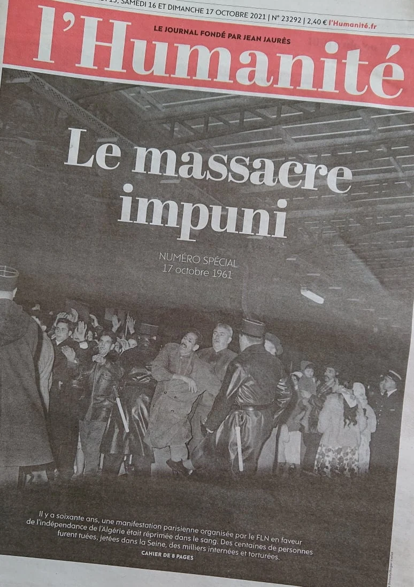
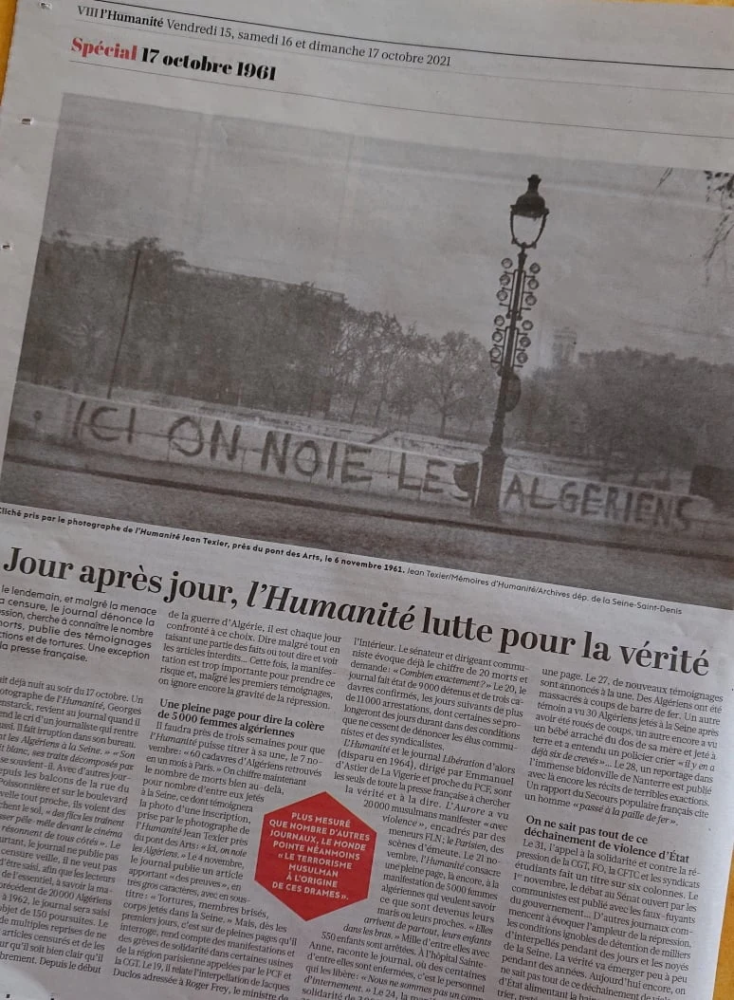
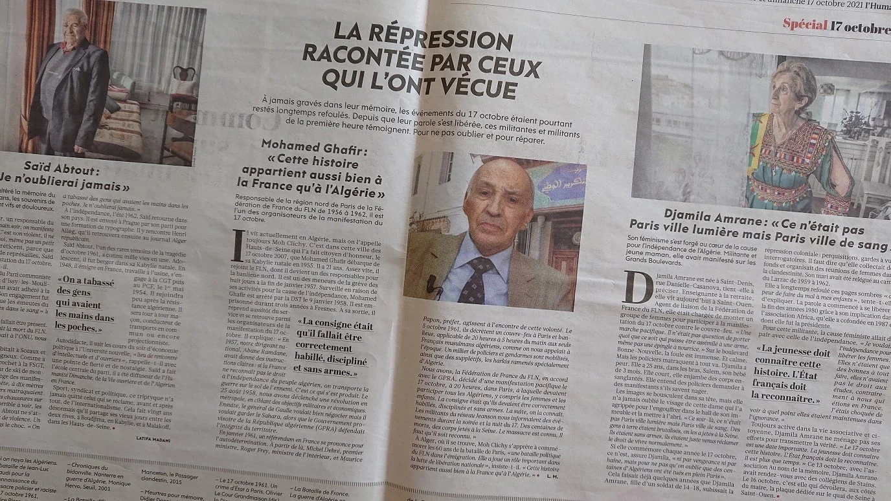
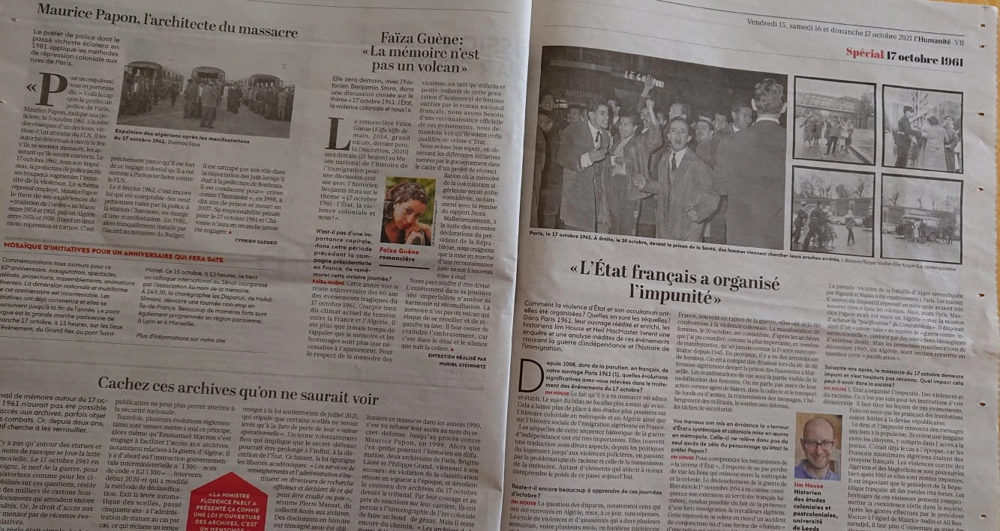

Mémoire
17 octobre 1961. Se souvenir des victimes et exiger la reconnaissance de la responsabilité de l’État
Date indiquée par Facebook · 15 octobre 2021
Repères éditoriaux
À l’approche du soixantième anniversaire, le texte relayé rappelle la répression de la manifestation du 17 octobre 1961. Le 16 octobre 2021, la présidence de la République a reconnu la gravité des crimes commis sous l’autorité de Maurice Papon. Le texte d’époque conserve sa propre exigence de reconnaissance.
Texte conservé avec la publication
17 octobre 1961, un crime d’État jamais reconnu
Il y a soixante ans, le 17 octobre 1961, une manifestation parisienne organisée par le FLN en faveur de l’indépendance de l’Algérie était réprimée dans le sang par la police du préfet Maurice Papon. Le massacre de centaines de personnes dura plusieurs jours.
Dans l'Humanité de ce jour, un dossier spécial sur ce crime d’État jamais reconnu.




Sources
Archive rouge · export Facebook · AR-0002-FB-02014
À lire aussi · Simone de Beauvoir avec Mathilde Larrère · Le lien d’origine